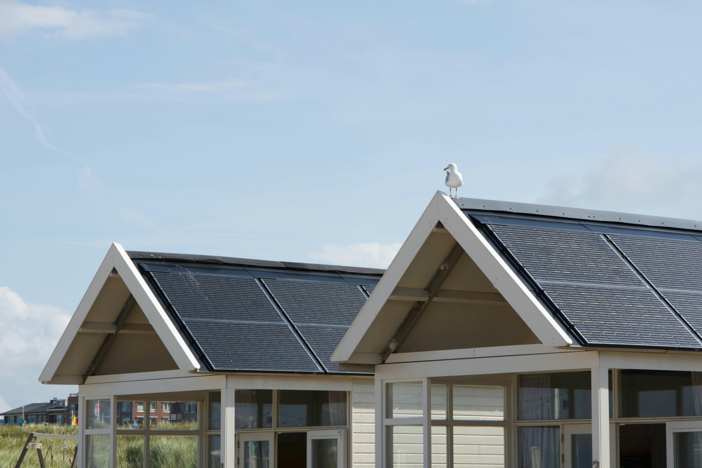

What is Solar Power?
Solar power is energy harnessed from the sun's rays. It is a renewable and sustainable source of energy that can be used to generate electricity, heat water, and power various devices. Solar panels, also known as photovoltaic (PV) panels, are commonly used to convert sunlight into electricity.
Solar power is a clean and environmentally friendly energy source, as it does not produce greenhouse gas emissions or air pollutants. It is also abundant and widely available, making it a promising solution for meeting the world's energy needs while reducing our carbon footprint.
Benefits of solar
- Eco-Friendly: It produces zero emissions and helps protect our air and water quality.
- Renewable Source: As long as the sun shines, we have a constant supply of energy.
- Cost-Effective: Once a solar panel is installed, the "fuel"—sunlight—is completely free.
- Land Use: Solar farms can be built on agricultural land, allowing farmers to continue growing crops around the panels.
Practical Tips for Your Home
You can support solar energy from home! Start by checking with your utility provider to see if they offer a "Green Power" program, which allows you to buy electricity specifically generated from solar. You can also look into small-scale residential solar panels if you have a sunny roof. For most students, the best way to help is by reducing overall energy demand—using less power at home means we don't have to rely as much on older, polluting power plants.

How It Works
Solar panels convert sunlight into electricity.

Solar Farms
Solar farms can be built on agricultural land.

Eco Impact
Solar energy has a minimal environmental impact.